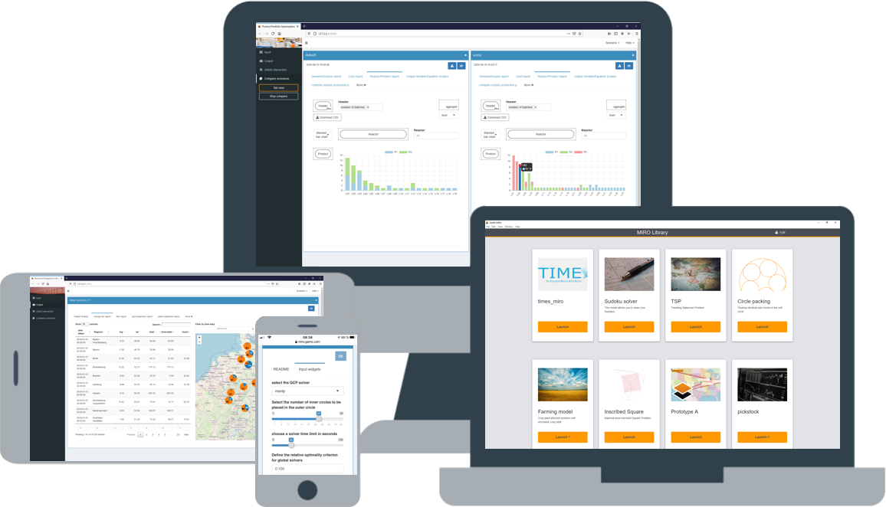
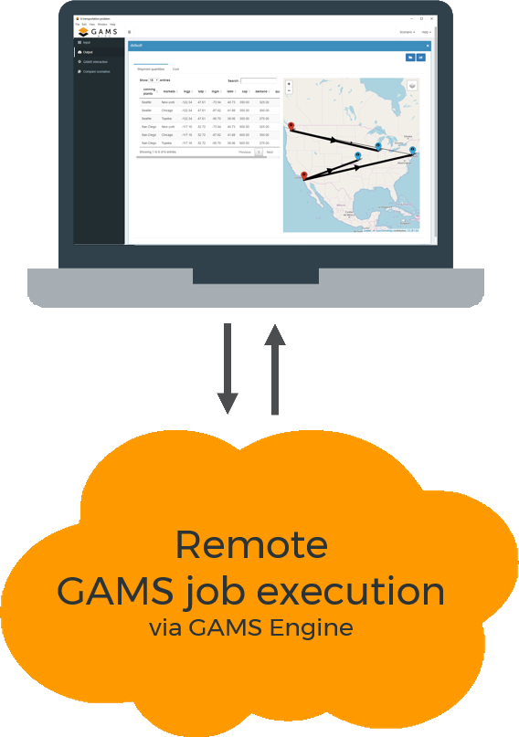
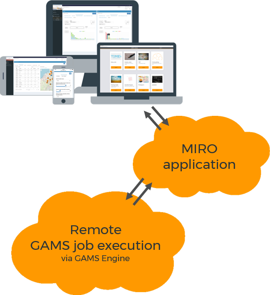

MIRO helps you to make smart decisions by leveraging the full potential of mathematical optimization.
Introduction
What is MIRO and what can I use it for?
Utilize your optimization problem
MIRO is a deployment environment that enables you to turn your GAMS models into fully-fledged end-user applications that are easy to distribute. An intuitive, user-friendly interface allows you to interact with the underlying GAMS model, quickly create scenarios, compare results and much more. MIRO's extensive data visualization capabilities provide you with the ability to create powerful charts, time series, maps, widgets, etc. with ease.
Rapid setup, highly customizable
You can create your first application within a few minutes and then develop it step by step. No programming knowledge is required, the focus is rather on providing a wide range of configuration options. If the configuration options are not sufficient for you, you can become creative yourself and implement your own ideas.

Enterprise Setups
MIRO can be used as a local application, as a hybrid of a local application that performs highly scalable model calculations in the cloud, up to a pure server setup that can be accessed from anywhere.
For whom is MIRO designed?
The possible applications of MIRO are manifold. MIRO is intended for everyone who works with optimization models or has to make decisions based on those.
Business
Make business decisions based on optimization software without the need for extensive Operations Research or GAMS expertise.
Research
Benefit from MIRO's advanced scenario and data management system that helps you focus on your research.
Teaching
Give a general insight into the topic of optimization or illustrate a specific problem in detail.
Components of GAMS MIRO
MIRO is the deployment environment for GAMS models. To understand the different components, let's first look at the simplest setup: MIRO is installed locally on a computer that also runs GAMS.
GAMS MIRO user interface
The probably most prominent component is the MIRO user interface (MIRO UI). This shows the classic MIRO application in the browser where you can modify model input data, execute GAMS jobs and view the results. Also the configuration of the application such as creating graphics and setting general options is done here.

GAMS/MIRO connector
The GAMS/MIRO connector is the interface between GAMS and MIRO and is responsible for their data contract. For communication between GAMS and MIRO this component takes over the data management on GAMS side.
GAMS MIRO Library
For the app development you only need the components MIRO UI and the GAMS/MIRO connector. The MIRO UI can be accessed via GAMS Studio or the command line. For locally deployed apps another component - the personal MIRO library - is used. All deployed apps can be accessed from here. But also global settings such as the language or the browser to be used are made.

Optimizing in the cloud
If GAMS jobs are to be calculated in the cloud, additional components are required. GAMS MIRO Engine takes over the entire job management and the associated infrastructure for cloud-based optimization. It's a state-of-the-art system that runs on a server and offers enterprise features such as high scalability, load balancing via a job queue, rolling updates and much more. GAMS MIRO Engine can not only be controlled via a MIRO application, but also via a REST API. Thanks to the use of OpenAPI, various programming languages are available.

GAMS MIRO Desktop
Boosted by GAMS MIRO Engine
GAMS MIRO Engine can be accessed from a local MIRO application. So you can solve GAMS jobs in the cloud from your computer. In such a setup, the MIRO UI and the MIRO library are installed on the local computer. However, since the GAMS jobs are solved in the cloud, the GAMS system no longer runs locally, but as part of the GAMS MIRO Engine on a server.
GAMS MIRO Server
Everything on a server
In another setup - GAMS MIRO Server - all components run in the cloud. The access to deployed MIRO applications is no longer done via the local MIRO library, but via a slightly modified variant on the server.
Learn more

The underlying technology
R
The MIRO user interface is mainly written in R and uses the advanced data processing and extensive visualization capabilities of R to provide its rich functionality.
Docker
GAMS MIRO Engine is a product based on docker, that uses state-of-the-art technology to take care of the entire job management and the associated infrastructure for the cloud-based optimization.